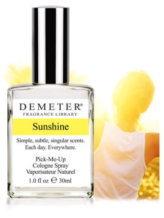

Sunshine

- 品牌：Demeter(气味图书馆）
-
- 前调：
- 中调：
- 后调：
- 浓度:Cologne
- 发行年：
What does Demeter's Sunshine smell like? Think of your favorite, most comfortable cotton T-Shirt left outside and warmed by the sun.
We thought long and hard about what elements we could use to express the idea of Sunshine. After a debate that lasted more than a year, we decided Cotton, warmed by the sun, was the smell that best represented the idea of Sunshine
Now we had a direction, but executing that direction was easier said than done. It took almost another two years until we felt this fragrance was done. Let us know if you think it was worth the wait.
阳光是什么味道？想一想你最喜爱的那件最舒适的纯棉T恤，被饱满的阳光晒干后留下的味道。
想要表达出阳光的味道可有点难，高中语文老师说这叫通感。这个事让我们闹心了一年，最后我们决定，阳光下晒得蓬松柔软的棉质味道，是我们期待的Sunshine。